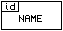
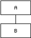
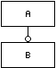
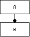
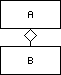
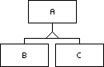
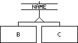
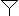

|  | Object class with hex id and name. |
|  | One A is always related to one B. |
|  | One A is related to zero or one B. |
|  | One A is related to zero or more B. |
|  | One A contains one B (aggregation). |
|  | B and C are derived from A (inheritance, polymorphism). |
|  | B and C share the same interface, but are not derived from a specific object (other than Object[00]). |
| Reference to object defined elsewhere. | |
|  | Entry point: some global variable to start navigating the data model. |